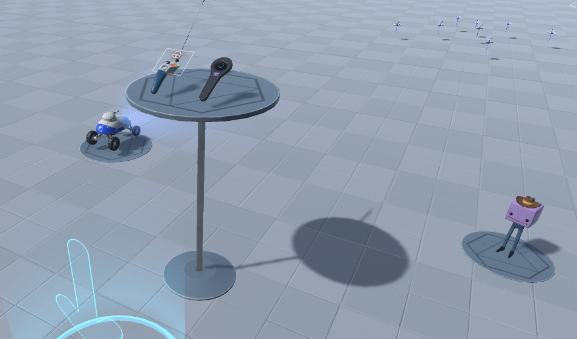
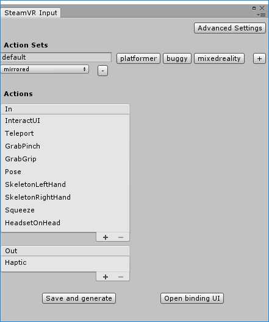
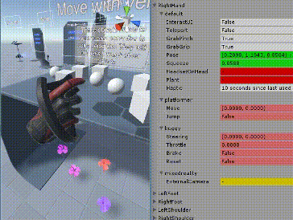
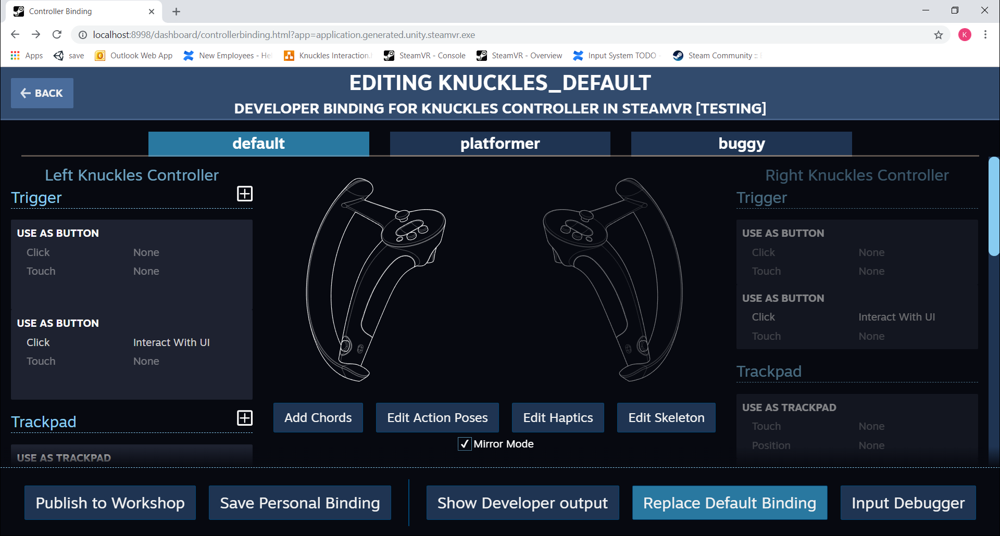
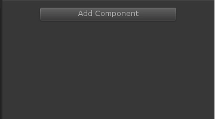
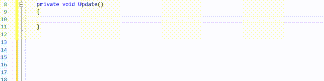
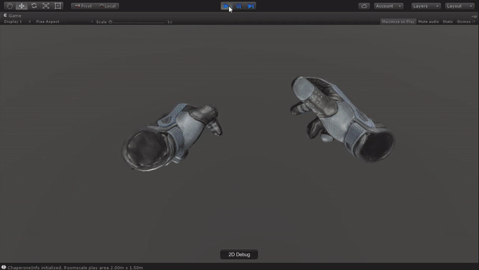
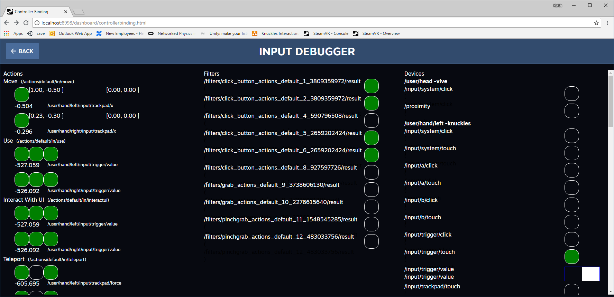

Overview
The VR ecosystem is growing every day and with Knuckles we're adding quite a bit of potential to the space. SteamVR now needs to handle finger tracking and force sensors. This requires we take another look at how we're handling input now, and how we'll handle it in the future. Joe Ludwig posted about the new SteamVR Input System a bit here. Now we're going to dive into how you as a Unity developer can use this system to stop worrying about each new input device and focus on creating your virtual reality. We'll start from the beginning with downloading the unity plugin, go through adding new actions, binding them, using them in the editor and code, and finally creating a build.
We have not removed access to the old input functions, but both can't be used at the same time. We strongly encourage you to move to the new input system. All of the scenes, prefabs, the default camera rig, and the interaction system in the SteamVR Unity plugin now use this new system. But if you prefer, the old system is on the releases page of our github.
Video version
If you'd prefer a video version of this tutorial you can watch it on youtube here: https://www.youtube.com/watch?v=qo-9CmcKWlY
Downloading the Plugin
This is an significantly different iteration of the Unity plugin. We've made a lot of changes to how input works and we want to make sure we continue to get your feedback. We welcome you to post about issues on our github issues page here. You can download the SteamVR Unity Plugin from the Unity Asset Store here or on the releases page of the SteamVR Unity Plugin on github. If you'd like to suggest specific code changes please do that with an Issue or Pull Request on our github page.
To start off, go ahead and download this package and extract it into a new Unity project. We recognize that many of our developers are still on older versions of Unity and we are committed to continuing to support them. Currently the plugin will work as far back as Unity version 5.4 and up to 2019.1.
SteamVR Interaction System
The SteamVR Interaction System has been updated to support the new SteamVR Input System as well as the Knuckles EV2 and EV3. You can find the main scene in your project under Assets/SteamVR/InteractionSystem/Samples/Scenes/Interactions_Example.unity

In this scene you'll find a number of new things. We've extended throwing examples, added a platformer controller, an RC car, a simple push button, grenades, and lots of hand samples.
In the throwing section there's now a basic example of item interaction with velocity based movement similar to NewtonVR. This makes it so your items no longer pass through solid colliders unimpeded. Instead they slide more smoothly around obstructions. A more hearty velocity estimation algorithm has been added to not just average existing controller velocity but to match throwing intent even if the actual release point was a bit too early or late. And we've separated out the existing styles of interacting with items so you can assess those as well. All of these interactable bits are settings on the existing Throwable component.

The platformer and rc car section has some fun samples for you to discover. They're relatively simple controllers but show a more indirect form of interacting with your world. The controllers hold the actions and get queried with the hand that is holding them.
Knuckles brings finger tracking to SteamVR. This is accessed through the new SteamVR Skeletal Input system. Knuckles estimate finger positions and then passes that data off to the driver which interprets that into 31 bone transforms. This can be used to much more deeply engage the user with their reality. But this isn't a feature exclusive to Knuckles. The plugin also includes finger estimations for Vive wands and Oculus Touch, and we'll be working with Microsoft to add support for Windows MR controllers as well. By default in the scene you'll now see hands as well as controllers. You can teleport over to the Skeleton section of the scene to Show and Hide the controller models as well as switch between a hand animation gripping the current controller and a hand animation that opens and closes freely. To learn more about the SteamVR Skeletal Input system, view this blog post.
The SteamVR Input window
If you select your Window menu you'll see a new item here called SteamVR Input. Click on that and you'll likely get a dialog explaining that you're missing an actions JSON and asking if you'd like to use the default. Select Yes and it'll copy the default actions.json file, as well as the related bindings files for a few popular controllers into the root of your project directory. This is where SteamVR will read them from when you go into Play Mode and where it'll copy them from when you make a build.

Once those are copied the window will populate a list of actions sets and actions that are used in the Interaction System scene. We'll get into adding and modifying actions later for now we're going to skip down to the bottom of this window to Save and Generate. Clicking this button will start a bunch of behind the scenes work to plumb your actions into generated properties for you to directly to access them without magic strings.
When the progress bar completes it will have created a folder in your project called SteamVR_Input with all those code files in it. This path can be configured through the settings button at the top of this window.
Testing
Alright, lets see these actions in... action! Now that you've imported the plugin and generated your actions you should be able to just hit play to go in world and check out the interaction system example scene.
Once you've looked around a little bit let's take a look at the state of the actions themselves. We have an easy ways to visualize the state of actions at runtime. In the window menu you'll see a new option: SteamVR Input Live View. This is a live view of all your actions separated by action set and controller. Open up your scene view and your game view so they're both viewable at the same time and make sure the "Maximize on Play" button is unchecked. This button provides significant in editor performance increases but we want to see the rest of the editor right now.

When an action's value changes it will highlight green and then fade away to give you a strong visual indication of state change. A yellow background for an action means it hasn't been accessed by your code yet. We only start updating actions once you access them somehow. If you're not seeing any changes when you press buttons make sure that your controllers are being recognized by SteamVR and that you don't have any errors in the console.
Adding an action
SteamVR Input abstracts away the device specific parts of your code so you can focus on the intent of the user - their actions. Instead of writing the code to recognize "pulling the trigger button down 75% of the way to grab the block" you can now just focus on the last bit of that, "grab the block". You still configure the default for what "grab" means but the user can rebind it to their preference in a standard interface. And when a new input device comes out your users can publish bindings to share for that device with no code changes on your end.
Back in the SteamVR Input window you'll find your list of actions. Selecting an action will populate its details and allow them to be modified. Boolean, vector1, vector2, and vector3 types should be pretty straight forward. The skeleton type controls the hand bone position/rotations. Pose is the position/location of the controller itself. At the bottom you'll see the localized string for an action, this is what users will see in the binding UI, so try and give your actions short but descriptive names.
We've included a sample script and model for a planting example, so lets go ahead and implement an action for that. In the default action set at the bottom of the In actions hit the plus icon to create a new action. Go over to name and name this action "Plant". We want to keep it boolean since the idea is we're either planting or not, and we don't want to require this action to be bound since it's not critical to our application so leave it as suggested. Under localization lets duplicate the name for English, just put in "Plant" there as well.
Now lets save and generate. This will save out a new actions.json file (which you're welcome to look at, it's just text) and then generate a scriptable object and property for our new action.
Binding actions
Once we've created our new action we now need to bind it to a button for testing. So after it's done generating click the "Open Binding UI" button. This will open your default browser to the SteamVR binding UI with the selected application being Unity.
If you're presented with a list of games instead of a list of bindings you may have renamed your Unity executable and you'll need to go into play mode and click the open binding UI button again to get Unity to register correctly.
Select the current binding by clicking the Edit button next to it. You should now see a list of buttons for your currently tracked controllers and actions that are bound to them. Near the top your default action set should be highlighted red, if you mouse over that it will let you know that your suggested action "Plant" has not yet been bound.

I'm going to scroll down to my A button since it doesn't have any bindings yet and hit the plus icon next to that. That will give me a list of options on what sort of mode I want to bind for this action. I want something simple so I'm going to select Button. Next to the text "Click" under Button you'll see a box that says None, click on that and it will prompt you to bind the button click to an action. Select Plant.
We want the same response on both controllers so under the A button on the other hand repeat the same steps.
Now you can go to the bottom of the window and click the Replace Default Binding button. This will automatically replace the associated binding file in the root folder of your project with these new changes.
To solidify this change hit the back button on the binding UI to go to your bindings for Unity. Now you should have an existing "Current Binding" but now also one under "Official Bindings" that you just created. Select View here and then "Select this Binding" at the bottom left to attach this binding file that you've exported as your current binding. If it prompts you about your local changes you can freely discard them since we explicitly exported those changes.
Assigning actions in the editor
We've created, generated, and bound an action now let's assign it to do something. In the project you'll find a script at Assets/SteamVR/InteractionSystem/Samples/Scripts called Planting. Drag this component onto your hands in the hierarchy at Player/SteamVRObjects/Hand1 and Player/SteamVRObjects/Hand2. In the inspector for these two components you'll see a dropdown for the "Plant Action" click on the dropdown and select \actions\default\in\Plant. It's that easy to use actions in the editor.

Go into play mode and hit the A button (or whatever you bound) and check out your fancy planted flower!
Working with actions in the code
Double click on the Planting script to open it in your IDE and let's take a look at how our script interacts with this action.
At the top you'll see an OnEnable method that has a reference to our action in it. It's calling the AddOnChangeListener method and passing in a method we want called when the action changes. We're also passing in the type of hand that the script is currently on so we only get change events when the action has changed for that hand.
In OnPlantActionChange we've gotten a notification that the action's state has changed but that could be to true or to false. We only care about when the button has been pressed down so we call GetStateDown and again pass in the hand type that we're working with. If the button was pressed down then we execute our planting coroutine. You're not restricted to calling GetStateDown from inside an event, you can call it from anywhere, inside Update, coroutines, etc.
If you'd prefer, you can reference actions explicitly in code by named property in the SteamVR_Actions class:

Working with actions in the Editor
We've also got some helper components if you're more comfortable with the editor than code. Let's go back to Hand1 and Hand2 and add SteamVR_Input_Boolean components to them. Select our plant action on that component. Here you'll see a lot of unity events for different button state changes.
Planting one flower at a time is okay, but I want more, like a lot more. Let's hit the add button in the OnPress section of the SteamVR_Input_Boolean component. Then drag our planting component into the object section. Under function select the Plant method.
Now when you go into Play mode you'll plant a flower on press down but also whenever the button is pressed at all. By default this will execute once per frame. Lots of flowers!

Troubleshooting actions
If you're having trouble with your actions and want a different interface for viewing the states at runtime check out the Input Debugger. In the binding UI select your game, select your current binding then in the lower right hand corner click the Input Debugger button.
On the left you'll see a list of actions and their current states. For a given action the first circle is if the action is active, the middle is if it's currently true, and the last is when that action has changed.
On the right you'll see the currently tracked controllers and the states of their individual buttons.

Creating a build
When you go to create a build nothing has changed as far as your workflow goes but one new thing will happen. Your action and bindings files will be copied to the build directory alongside your executable. By default they will overwrite what's there to ensure you have the most up to date bindings for your build. If you don't want this to happen there's an option to disable that in the SteamVR Input window.